2 几何数列与级数
古者丈夫不耕，草木之实足食也；妇人不织，禽兽之皮足衣也。不事力而养足，人民少而财有余，故民不争……今人有五子不为多，子又有五子，大父未死而有二十五孙。是以人民众而货财寡，事力劳而供养薄，故民争。
——《韩非子·外储说右下》
……积数百年，地不足养，循至大乱，积骸如莽，流血成渠；时暂者十余年，久者几百，直至人数大减，其乱渐定。乃并百人之产，以养一人。衣食既足，自然不为盗贼，而天下相安。生于民满之日而遭乱者，号为暴君污吏，生于民少之日获安者，号为圣君贤相。二十四史之兴亡，以此券矣。
——严复《保种余义》
一个来到已人满为患的世界的人，如果父母无力抚养他，而社会又无法使用他的劳动，他就无权得到一点食物。实际上，他在地球上就是一个多余的人。在盛大的人生筵席上，没有他的座位。自然规律命令他离去，并立即亲自执行对他的判决。
——马尔萨斯
生活的穷困，不断地压迫人类。这考虑所引出的人生观，表明了在这世间，要合理地主张人类完成可能性，是毫无希望的，从而使人强烈地寄希望于来世。
——马尔萨斯
今天黎教授走进联合市公立图书馆，图书馆管理员杰妮看到他就喜笑颜开：“黎教授午安！真要感谢您。莫莉的数学进步神速，现在她的几次小考都得满分。而且她能在课堂上迅速回答数学老师的问题，真是奇迹。”
“啊！这孩子本来就很聪明，只是以前有很重的自卑感。她一直以为自己不行。
您也知道一个人如果对自己都没有自信，就不可能迈步前进。我只是把她的自卑感解除，她知道自己是有实力的，再加上一点鼓励，她就像一只蓄势待发的良驹，可以轻易地在科学的原野上奔驰。”
“怎么讲您的功劳都不可否认。今天有什么事我可效劳？”
“是这样，我想借儿童游玩区的一件玩具来教莫莉和她哥哥数学，我想借用半小时可以吗？”
“没有问题，你们好好利用。我很好奇，是什么东西与数学有关？”
“啊！这东西就是3根杆子，其中左边的杆子放3个、4个或5个穿孔圆盘，盘的尺寸由下到上依次变小。
我们想将所有的圆盘移到右边杆子上，规则是：（1）每次只能移动一个圆盘；（2）大圆盘不能叠在小圆盘上面。
我们可以暂时将圆盘放在中间的杆上，也可以将左边的杆移出小圆盘后重新移回左边，但每个过程都要遵循上面的两条规则。
我现在把这玩具拿来。您试试看，怎么移动3个圆盘？”
黎教授首先示范1个圆盘、2个圆盘的玩法。杰妮试了几次，最后总算解决3个圆盘。过程就像下图。
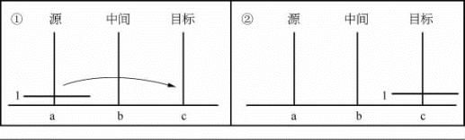
1个圆盘的玩法
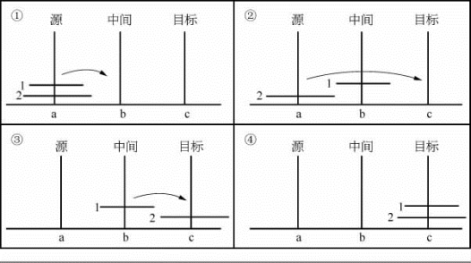
2个圆盘的玩法
“喔！这个游戏还不是太容易。”
“是的！那么我把这玩具带到阳台上去。”
3点，拉姆奥和妹妹莫莉一起出现在图书馆的阳台。他们奇怪老教授在玩一个幼儿玩具。
“孩子们！过来！这是一个很好玩的东西。这是1883年法国数学家爱德华·卢卡斯（Edouard Lucas，1842—1891）发明的一个游戏，叫卢卡斯圆盘游戏。”
“老爷爷！我玩过这个游戏，知道这个规则，对于3个圆盘，我可以用7次移动完成。”拉姆奥说。
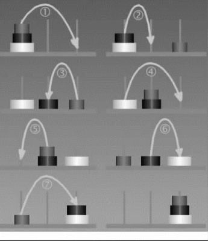
3个圆盘的玩法
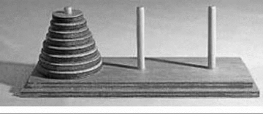
卢卡斯圆盘游戏实物图
“我现在给你们看他的相片，以及他发表这游戏的书的封面。
当时他为了迎合欧洲人对神秘东方文化的好奇，故意说这是越南河内一个中国教授所发明。还编造以下的神话：说印度教的创造之神梵天在创造世界之后，立了3根宝石柱子，其中一根柱子从下到上有64个圆形金片。
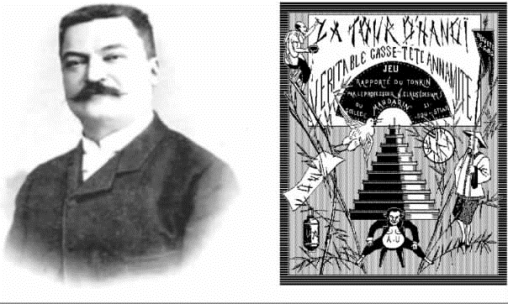
卢卡斯和他的书
他要婆罗门修道者每天不论白天黑夜都把一根柱子上的金片移到另外一根柱子上，一次只能移一片，而且不管在哪根柱子，小片永远在大片之上。
只要某一天能全部搬完，世界就在一声霹雳当中灰飞烟灭，众生、庙宇完全不见。”
“有没有这个可能？”莫莉问。
“我们今天就要研究这个问题，是否真的这样。
我想让你们了解一种叫等比数列的东西，另外也了解一下什么是‘大数’。
首先，我让你们一起解决4个圆盘的问题，看要用多少次才能做到？”
兄妹俩花了20分钟的时间解决了4个圆盘问题，总共移动15次。
“孩子！现在我要告诉你们一种数列a1，a2，…，an，…。这种数列的特点是：从第二项开始，后面与前一项的比都是一个（非零）常数。这个比叫公比，这种数列（或级数）叫等比数列或几何数列。
如果公比是r，第一项是a，因此我们知道几何数列的样子是：
a，ar，ar2，ar3，ar4，…
莫莉，你判断以下是不是几何数列：
2，4，8，16，32，64，128，256？”
“是的，爷爷，公比是2，第一项也是2。”
“拉姆奥，看这个数列是不是几何数列：1，－3，9，－27，81，－243？”
“我想，应该是。第一项是1，公比是－3。”
“那么1，－1，1，－1，1，－1，1，－1，…是不是几何数列呢？”
他们犹豫一会，说：“应该是。”
“我现在要推导几何级数的求和公式
令Sn ＝a＋ar＋…＋arn－1，
若r≠1，我们有
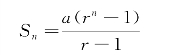
莫莉！如果a＝1，r＝2你可以算出S1，S2，S3，S4，S5 是多少吗？”
“爷爷！我算算。S1＝1，S2＝3，S3＝7，S4＝15，S5＝31。”
“拉姆奥！你发现这些数和什么东西有关？”
“啊！这和我们刚玩的玩具的圆盘数有关系。S1 是只有一个圆盘时要移动的次数。S2 是两个圆盘，最少要3次才能完成移动。S3 是3个圆盘，我们最少要用7次才能完成移动。S4 是4个圆盘，我们要用15次移动才行。”
“对的。你的观察正确。可以用数学归纳法来证明事实也是如此。”
世界上最古老的数学趣题
在7间房子里，每间都养着7只猫；在这7只猫中，不论哪只，都能捕到7只老鼠；而这7只老鼠，每只都要吃掉7个麦穗；如果每个麦穗都能剥下7颗麦粒，请问：房子、猫、老鼠、麦穗、麦粒都加在一起总共该有多少数？
答案：总数是19 607。
房子有7间，猫有72＝49只，鼠有73＝343只，麦穗有74＝2401个，麦粒有75＝16 807颗。全部加起来是7＋72＋73＋74＋75＝19 607。
可以说这是世界上最古老的数学趣题了。大约在公元前1800年，埃及的一个僧侣名叫阿默士（Ames），他在纸草书上写有如下字样：
家 猫 鼠 麦 量器
7 49 343 2 401 16 807
但他没有说明是什么意思。
两千多年后，意大利的斐波那契在《算盘书》（1202年）中写了这样一个问题：“7个老妇同赴罗马，每人有7匹骡，每匹骡驮7个袋，每个袋盛7个面包，每个面包带有7把小刀，每把小刀放在7个鞘之中，问各有多少？”
读者们可以试着解一下此题。
函数的概念
我现在要介绍笛卡儿给你们认识，他是17世纪法国伟大的哲学家、物理学家、数学家。1637年笛卡儿创立平面直角坐标系，创建解析几何，以后许多几何问题都可以转化为代数问题来研究。
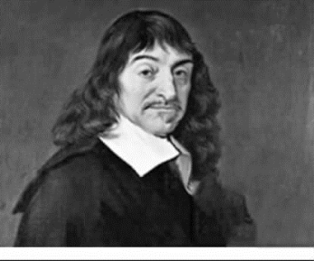
笛卡儿
因为平面直角坐标系的建立，产生了函数的概念。函数就是在某变化过程中有两个变量x 和y，变量y 随着变量x 一起变化，而且依赖于x。如果变量x 取某个特定的值，y 依确定的关系取相应的值，那么称y 是x 的函数。
x，y 的关系式y＝3x＋1中，对每一个x 值，都恰好只能对应一个y 值，例如：
x＝1时，y＝4； x＝2时，y＝7； x＝3时，y＝10
函数就好像一个魔术师的戏法箱，只要给适当“输入”，就一定会有“输出”，而且相同的输入必定会得到相同的输出。
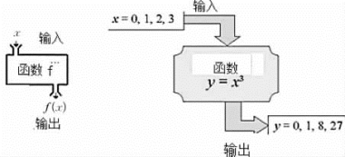
举例来说：若车速固定为90千米/时，
1分钟后，车子行驶的距离为1．5千米。
2分钟后，车子行驶的距离为3千米。
3分钟后，车子行驶的距离为4．5千米。
4分钟后，车子行驶的距离为6千米。
其实，由公式“
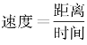
”，我们知道t分钟后车子行驶的距离为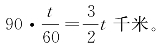
如此，我们输入的值是车子行驶的时间，输出的值是车子行驶的距离，就得到一个函数描述该车的行驶状况。
我们通常以符号
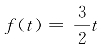
来表示这个距离函数。其中f 是函数的名称（当然不一定要叫f，也可以取其他的名字），小括号里面放的是输入的时间，等式右边则是输出的距离。这个函数也可以用平面图形来表示：横坐标为输入值，纵坐标为输出值。1775年，欧拉在《微分学原理》一书中提出了函数的一个定义：“如果某些量以如下方式依赖于另一些量，即当后者变化时，前者本身也发生变化，则称前一些量是后一些量的函数。”我们用符号f（x）表示函数。
现在给个函数的例子。在科学中，指数函数是指形如kax的函数，这里的a 叫作“底数”，是不等于1的任何正实数。指数函数按恒定速率翻倍。例如细菌培养时细菌总数（近似的）每3个小时翻倍，和汽车的价值每年减少10%都可以被表示为一个指数函数。癌细胞生长就是指数函数。
指数增长（包括指数衰减）指一个函数的增长率与其函数值成比例。指数增长模型也称作马尔萨斯增长模型。托马斯·罗伯特·马尔萨斯（Thomas Robert Malthus，1766—1834）是英国牧师，也是人口学家和政治经济学家。马尔萨斯提出不断增长的人口早晚会导致粮食供不应求。马尔萨斯在他1798年出版的《人口论》中预言：人口增长超越食物供应，会导致人均占有食物的减少，最弱者就会因此而饿死。由此推出，人类必须控制人口的增长。否则，贫穷是人类不可改变的命运。
他提出预言时只有32岁。他论断人口是按几何级数，例如1，2，4，8，…，2n增加，而食物只是按算术级数，例如1，2，3，4，…，n 增加，因而食物供应量的增加永远赶不上人口的增加。他认为，防止人口过快的方法在历史上有两种：
（1）积极性抑制，如饥荒、灾害、疾病、战争等；
（2）预防性抑制，如禁欲、晚婚、不结婚等。
马尔萨斯断言，人口的繁殖超过生活资料的增长是任何社会都存在的一种“自然规律”。
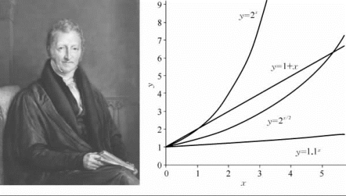
马尔萨斯和各种指数函数图像
“你们知不知道为什么许多癌症病人包括你们的父亲被诊断有癌症后，很快就死去？”
“许多癌症是不治之症，当病人知道他们有癌症就吓死了。”莫莉说。
“是的，有一部分病人的确是吓死的。坎萨斯大学的一个电机系主任肚子痛，被诊断有大肠癌晚期，不到3天就吓死。台湾有一个老军官被医生说患肝癌末期，事实上医生看错了，那是其他人的检查报告，这位身体本来健康的老人，3天之后竟然因忧愁恐惧而去世。
但真正的原因不是这样。”
老教授从背包中取出一些相片解释：
“用显微镜可以观察草履虫，它们常用于遗传学研究，因形似倒放着的草鞋而得名，是一种单细胞原生动物。草履虫主要靠分裂来繁殖，它们是一分为二，二分为四，四分为八……”
拉姆奥大声说：“草履虫分裂惊人，一个草履虫经过6天之后竟然分裂出那么多的草履虫！！”
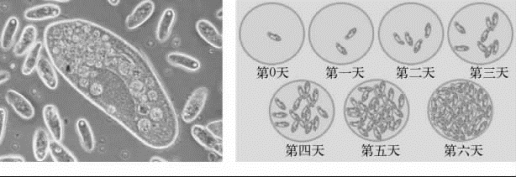
草履虫靠分裂来繁殖
“人的体细胞是靠有丝分裂来繁殖，它们也是一分为二，二分为四，四分为八……就像棋盘的米数增长。正常的细胞分裂是受到控制的，但是癌细胞却是没法控制的疯狂分裂，它们的分裂速度比正常的细胞快。因此如果有癌细胞出现，它不止分裂惊人，还会袭击其他正常的细胞，让它们也变成癌细胞，这就是癌细胞会迅速蔓延开来的原因。”
肺癌细胞的一分为二过程
动脑筋 想想看
1．我们知道：9＝3×3，16＝4×4，这里9、16叫“完全平方数”，在前300个自然数中，去掉所有的“完全平方数”，剩下的自然数的和是多少？
2．某人计划在7天里读完一本有385页的书，第一天读了40页。已知从第二天起，每一天都比前一天多读同样的页数。问每天多读多少页？
3．在△ABC 中，∠A、∠B、∠C 的对边分别为a、b、c，若a、b、c三边的倒数成等差数列，求证：∠B＜90°。
4．下表是一个数字方阵，求表中所有数字的和。
1，2，3，…，98，99，100
2，3，4，…，99，100，101
3，4，5，…，100，101，102
4，5，6，…，101，102，103
…………
100，101，102，…，197，198，199
5．一个等差数列的前10项之和为100，前100项之和为10，求前110项之和。
6．现有200根相同的钢管，把它们堆放成正三角形垛，要使剩余的钢管尽可能少，那么剩余的钢管的根数为多少？
7．已知等差数列a，b，c中的3个数都是正数，且公差不为0，求证：它们的倒数所组成的数列1/a，1/b，1/c 不可能成等差数列。
8．设S＝｛1，2，3，…，50｝，A 是S 的三元子集，满足：A 中元素可以组成等差数列，那么这样的三元子集有多少个？
9．6个数5，a，b，c，d，160成等比数列，则公比r＝？
10．3，a，b，c，d，e，27成等差数列，则a 是多少？